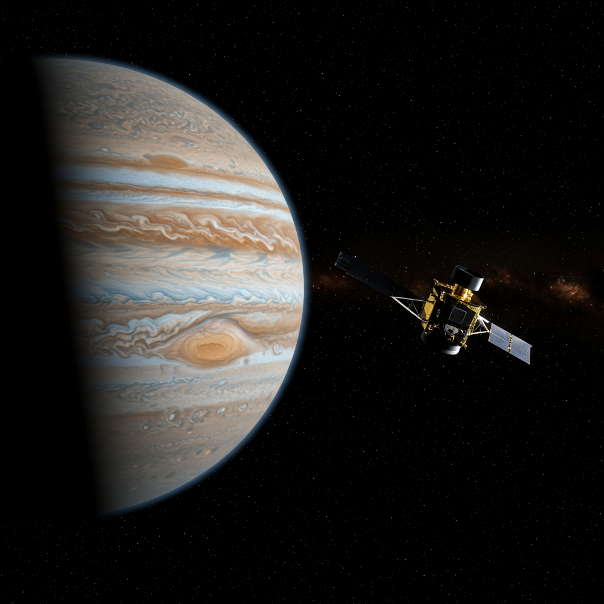

Sonda Juno
Agencia: NASA (Administración Nacional de Aeronáutica y el Espacio)
Fecha de lanzamiento: 5 de agosto de 2011
Tipo de misión: Orbitador de Júpiter
Instrumentación
Juno está equipada con nueve instrumentos científicos para investigar el origen, la evolución, la atmósfera y la magnetosfera de Júpiter:
- JunoCam: Cámara de luz visible para obtener imágenes de la atmósfera de Júpiter.
- MWR (Microwave Radiometer): Para medir la composición y temperatura de la atmósfera profunda.
- JADE (Jovian Auroral Distributions Experiment) y JEDI (Jovian Energetic Particle Detector Instrument): Para estudiar las auroras de Júpiter.
- Magnetómetro (MAG): Para mapear el campo magnético de Júpiter.
- Gravitational Science: Utiliza el sistema de radio de la nave para mapear el campo gravitatorio de Júpiter.
- UVS (Ultraviolet Spectrograph) y JIRAM (Jovian Infrared Auroral Mapper): Para investigar la atmósfera y las auroras en diferentes longitudes de onda.
Actividades Notables
La misión Juno está diseñada para estudiar Júpiter de una manera única:
- Llegó a Júpiter el 4 de julio de 2016 y entró en órbita polar.
- Realiza sobrevuelos cercanos y altamente elípticos de Júpiter cada 53 días, pasando a poca distancia de las cimas de las nubes.
- Recopila datos sobre el campo gravitatorio y magnético del planeta, la distribución de agua y amoníaco en su atmósfera, y las regiones polares y auroras.
- Ha capturado imágenes impresionantes y de alta resolución de las nubes de Júpiter.
Impacto Histórico y Descubrimientos
Juno está proporcionando información sin precedentes sobre el gigante gaseoso:
- Ha revelado detalles asombrosos de los ciclones polares de Júpiter, con estructuras complejas y persistentes.
- Ha mapeado el campo magnético de Júpiter con una precisión nunca antes vista, mostrando que es más grumoso y asimétrico de lo esperado.
- Ha proporcionado datos clave sobre la composición atmosférica y los patrones de circulación, ayudando a entender la formación de las bandas de Júpiter.
- Está arrojando luz sobre si Júpiter tiene un núcleo sólido.
Estado Actual
La sonda Juno se encuentra actualmente ACTIVA y en órbita alrededor de Júpiter, continuando su misión extendida.
A pesar de haber completado su misión principal, la NASA ha aprobado extensiones para que Juno continúe su estudio, permitiendo nuevos descubrimientos sobre el sistema joviano, incluyendo sobrevuelos a lunas como Ganímedes, Europa e Io. Su robusta operación sigue enviando datos cruciales sobre el planeta más grande de nuestro sistema solar.